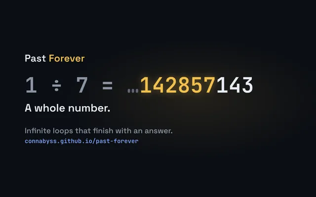
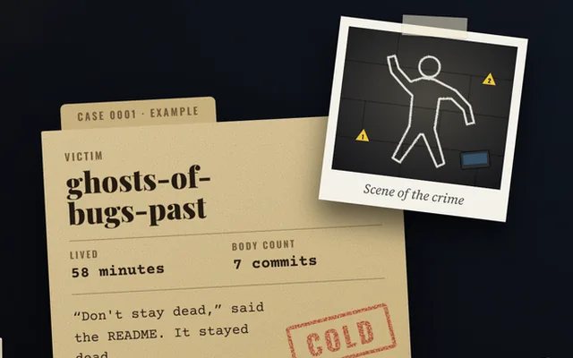
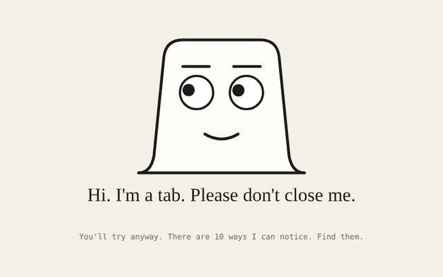

Past Forever
A tiny language where infinite loops finish with an answer. In its world, 1 ÷ 7 is a whole number, and times 7 it is exactly 1.
Your calculator rounds. Past Forever doesn't.
Take the Wonders tour →I make strange games and a few odd tools. Everything here runs in your browser, free.Both gold and grey rows above are 1 ÷ 7.

A tiny language where infinite loops finish with an answer. In its world, 1 ÷ 7 is a whole number, and times 7 it is exactly 1.
Your calculator rounds. Past Forever doesn't.
Take the Wonders tour →
Type your excuse for today's charge. Judge June Burden scores how believable it is and stamps a verdict. New docket every day.

A small real MMO where everyone is stuck in the tutorial, because the rest of the game never shipped. Other players are in there with you.

Type a GitHub username. Get a case file on every project they walked away from.

Talk an HR bot into telling you things. Real permission rules decide what it can't.

Try to close it. There are ten ways it reacts.

A house that rewrites its own code to keep you in.
GitHub Game Off 2026 entry